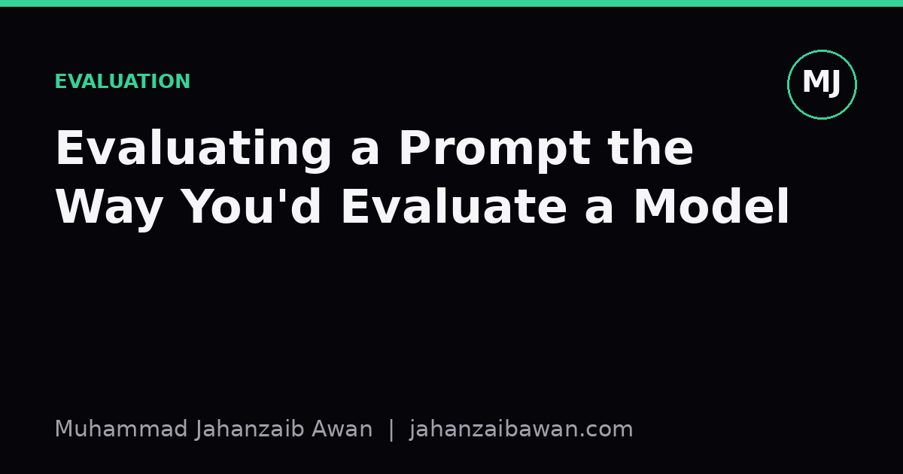

Evaluating a Prompt the Way You'd Evaluate a Model
Prompts are not magic spells, they are configurations that deserve the same evaluation discipline as any other model artefact.

Why prompts deserve the same scrutiny as models
When I tune a classifier, I would never accept a single run on whatever examples happened to be lying around as proof that it works. I would split the data, pick a metric before looking at results, and compare against a sensible baseline. Yet a lot of prompt engineering skips all of that. Someone tries a phrasing, glances at three outputs, decides it 'feels better', and ships it. That is not evaluation, it is vibes with extra steps.
The reason this matters is that a prompt is a configuration, in the same way a learning rate or a regularisation strength is a configuration. It interacts with the underlying model, the task, and the data distribution in ways that are not obvious from inspection. A prompt that looks elegant can quietly degrade performance on edge cases, and a prompt that looks clumsy can be robust precisely because it is explicit. You cannot tell which is which by reading the prompt. You have to measure.
Treating prompt selection as a modelling decision also forces useful honesty about uncertainty. If I change one word in an instruction and my accuracy jumps from 71 percent to 76 percent on twenty test examples, that is not a finding, it is noise with a story attached. The same scepticism I apply to a model that improves by half a point on a tiny validation set should apply here too.
Building the protocol: splits, metrics, and a fixed test set
The first step is the same as any supervised evaluation: separate your data into a development set you are allowed to look at while iterating, and a held-out test set you touch exactly once, at the end. This sounds obvious, but in prompt work it is routinely violated because the feedback loop is so fast. You tweak the prompt, run it on your 'test' examples, see the error, tweak again. By the tenth iteration you have effectively trained your prompt on the test set through repeated peeking, and your final number is optimistic in a way you cannot quantify.
A concrete example: suppose you are building a prompt to extract a delivery date from customer emails. You collect 200 labelled emails. Split 120 for development, 80 for a locked test set. While iterating, you only look at the 120. You try different instructions, different formats for the few-shot examples, different ways of asking the model to say 'no date found' when appropriate. You track exact-match accuracy and also a looser metric, correct date within one day, because customers sometimes write dates ambiguously and you want to know how much that costs you.
Once you settle on a prompt version using the development set, you run it once on the 80 held-out emails and report that number as your estimate of real-world performance. If someone asks you to tweak the prompt further after seeing the test result, that number is now contaminated and you need a fresh held-out set, or at least an honest caveat. This is identical to the rule about not touching your test set during hyperparameter search, just applied to prompt wording instead of weight decay.
Metrics matter as much as splits. Exact string match is often too strict for generative outputs and will make a genuinely good prompt look mediocre. Task-specific structured scoring, such as checking whether an extracted field parses correctly and matches within tolerance, usually tells you more than a blunt accuracy number. Decide on the metric before you see results, not after, otherwise you will unconsciously pick whichever metric flatters your favourite prompt.
Baselines, variance, and why a single number is not enough
Every prompt evaluation needs a baseline that is not just 'the previous prompt I happened to write'. A strong baseline might be a simple zero-shot instruction with no few-shot examples, or a rule-based extractor if the task allows one, or even just always predicting the most common class. In the delivery-date example, a baseline of 'always output no date found' might already score surprisingly well if most emails genuinely lack a date, and that tells you something important about how much headroom your clever prompt actually has.
Suppose your carefully engineered prompt scores 84 percent on the held-out 80 emails, and the trivial baseline scores 79 percent. That five-point gap is real information, but with only 80 examples the confidence interval around each of those numbers is wide, probably plus or minus six or seven points using a standard binomial estimate. The honest conclusion is that your prompt is probably better, not that it is definitely better. Reporting the interval alongside the point estimate, or at minimum acknowledging the sample size, keeps you from overselling a result that would not replicate on a different 80 emails.
Variance within the model itself is a second source of noise that is easy to forget. Many generative models are not deterministic even at low temperature, and running the same prompt twice on the same input can give different outputs. If you evaluate once, you are measuring one draw from a distribution, not the distribution itself. Running each test example three times and reporting the range, or fixing the decoding settings explicitly and stating them in your write-up, turns an anecdote into something closer to a measurement.
Finally, log everything: the exact prompt text, the model version, the decoding parameters, and the date you ran it. Models get updated silently by providers, and a prompt that scored 84 percent in March can score differently in June for reasons that have nothing to do with your wording. Without a logged snapshot, you cannot tell whether a regression came from your prompt or from the ground shifting underneath it.
A practical takeaway
The discipline is not complicated, it is just rarely applied to prompts with the same seriousness it gets applied to models. Fix a held-out set you do not peek at, decide your metric in advance, compare against a real baseline rather than your own earlier draft, account for sample size and model stochasticity when you report a number, and log the exact configuration that produced it. None of this requires special tooling, it requires the same habits that make any empirical claim trustworthy. If you would not accept a model result built on a glance at three examples, do not accept a prompt result built the same way.